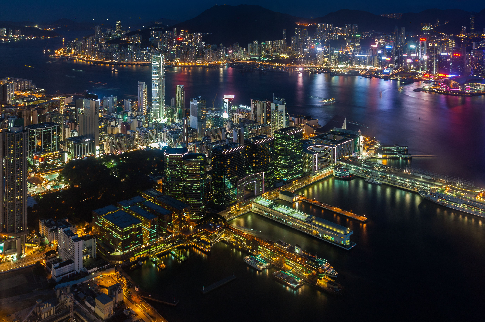

Hong Kong Travel Guide
Hong Kong is a city that never sleeps, known for its skyscrapers, bustling markets, and vibrant nightlife. Whether you're a foodie, a shopper, or a culture enthusiast, Hong Kong has something to offer for everyone. Here's a comprehensive guide to help you navigate this dynamic city.
Top Attractions
Hong Kong is home to many iconic landmarks and attractions. Don't miss out on visiting these top spots:
- Victoria Peak: Enjoy panoramic views of the city skyline from the highest point on Hong Kong Island.
- Star Ferry: Take a ride on the historic Star Ferry for a scenic view of Victoria Harbour.
- Lan Kwai Fong: Experience the vibrant nightlife and entertainment district in Central Hong Kong.
Dining
Hong Kong is a culinary paradise, offering a wide range of dining options from street food to Michelin-starred restaurants. Here are some must-try dishes and dining spots:
- Dim Sum: Try traditional dim sum at Tim Ho Wan or Lin Heung Tea House.
- Roast Goose: Enjoy succulent roast goose at Yung Kee or Kam's Roast Goose.
- Seafood: Visit Sai Kung or Lei Yue Mun for fresh seafood by the sea.
Shopping
Hong Kong is a shopper's paradise, offering everything from luxury brands to unique local markets. Here are some top shopping destinations:
- Canton Road: Find luxury brands and designer boutiques in Tsim Sha Tsui.
- Mong Kok: Explore the bustling street markets and bargain shops in this vibrant district.
- PMQ: Discover local designers and unique products at this creative hub in Central.
Cultural Experiences
Immerse yourself in Hong Kong's rich cultural heritage with these experiences:
- Man Mo Temple: Visit one of Hong Kong's oldest temples, dedicated to the gods of literature and war.
- Temple Street Night Market: Experience the lively atmosphere and street performances at this popular night market.
- Chi Lin Nunnery: Explore the serene Buddhist complex and beautiful gardens in Diamond Hill.